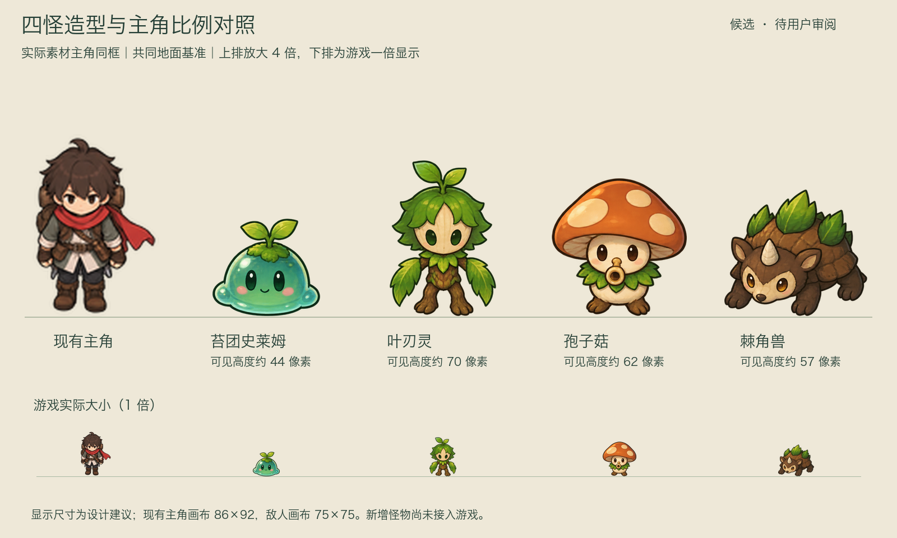
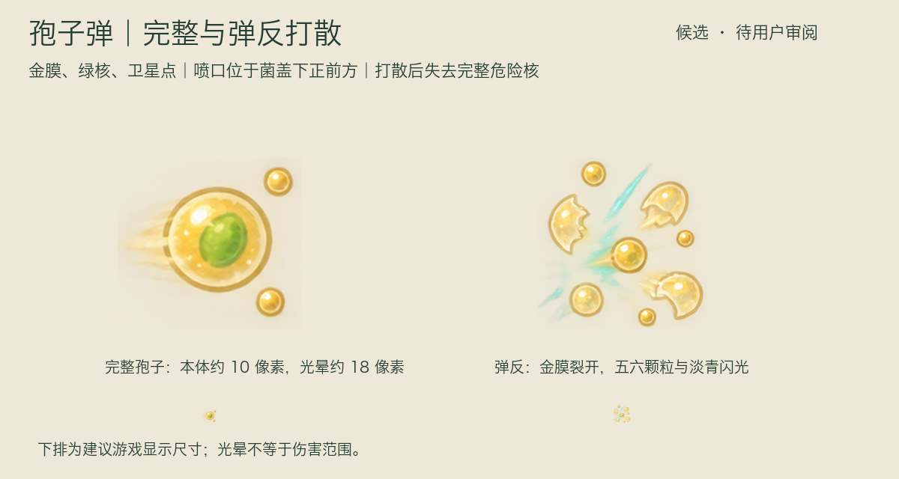
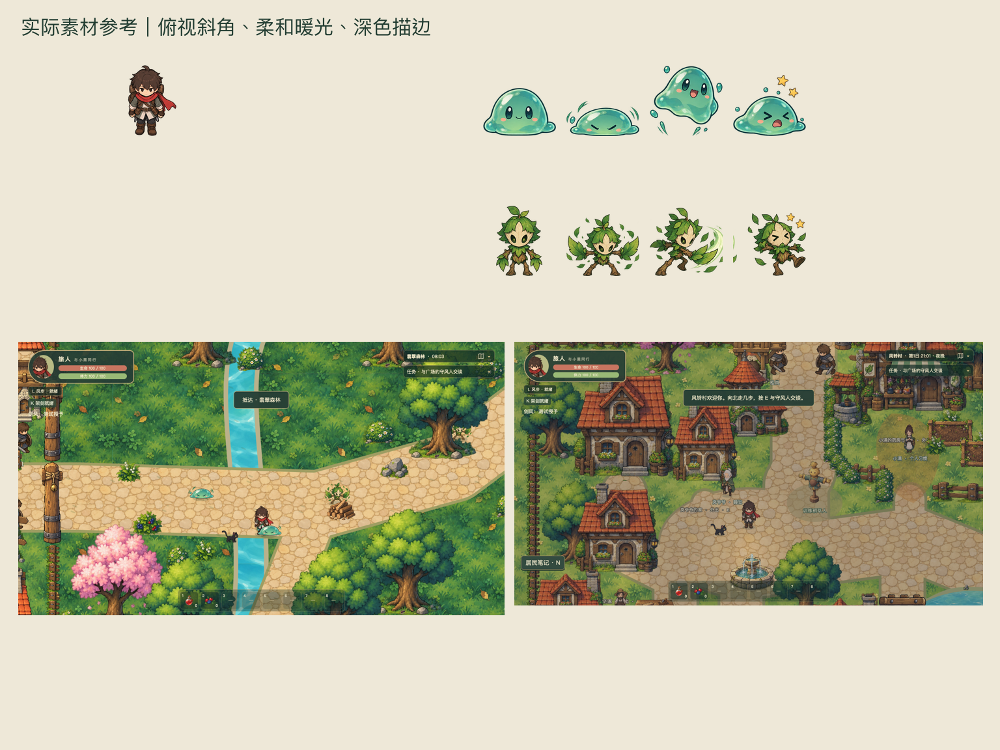

敌人造型与动作预制作 V1
全部候选：pending-review。24 张交付设计图；实际图像生成，已自检，等待用户美术确认。场景页为设计合成图，尚未实现。
参考提交：dd298c84e811af75d8c57660dcd80cadac63ebbb。建议点击原图，以浏览器 100% 缩放核对游戏实际大小。
四怪与实际主角比例总览待审阅
打开原图苔团史莱姆
透明设定与反馈源图 · 透明攻击源图
叶刃灵
透明设定与反馈源图 · 透明攻击源图
孢子菇
透明设定与反馈源图 · 透明攻击源图
棘角兽
透明设定与反馈源图 · 透明攻击源图
真实背景上的设计合成图

打开原图实际素材视觉基线待审阅
打开原图本轮在设计交付处结束。下一步需先确认设计，再制作史莱姆完整动画样片。